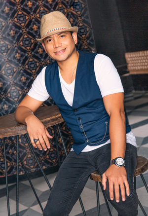

Las Extrellas Orquesta
Por: Jerrika Lozano
Agradecemos a:
LOCACIÓN:
BRUNO Reggaeton y Crossover Urbano
Calle 85N. 14-43 Piso 2
Reservas: 3014517544
Instagram: @brunoaptbogota
Facebook: Bruno
Con la originalidad que siempre los ha caracterizado, la orquesta más tradicional y popular de Colombia sorprende con un tema lleno de cumbia popular.
 @lasextrellas
@lasextrellas Las Extrellas Orquesta
Las Extrellas Orquesta Las Extrellas
Las ExtrellasLas Extrellas Orquesta, (Rochy, David, Vicky y Marlon) llegan con su nuevo éxito –Y No vayas a llorar– un tema musical con mucho despecho interpretado por las encantadoras mujeres de esta agrupación. Una historia sobre las relaciones que con el paso del tiempo uno de los dos deja que se enfríe el amor y es momento de decir adiós, “un tema corta venas” aseguran. El video de este sencillo es toda una novedad pues es el primero en Colombia en animación 3D, dirigido por Ever Fonseca uno de los mejores productores de este formato en Latinoamérica.
Marlon nos contó que duraron dos días rodándolo, con sensores de movimiento para capturar la gesticulación, un trabajo arduo que aseguran valió la pena ya que la experiencia fue única.
Una agrupación que ha logrado a lo largo de su trayectoria ser tan exitosa a nivel nacional e internacional, son pocos los sueños que no se han cumplido, y para nuestra sorpresa Las Extrellas Orquesta siempre han soñado con tener un éxito musical fuerte en el mercado mexicano por lo que este paso con su nuevo sencillo los acerca un poco más a cumplir esta meta; nos contaron que tienen dos sencillos más de este mismo estilo cumbia popular con los que buscarán posicionarse fuertemente en este mercado.
“Nuestro tema está dedicado a todas las mujeres empoderadas que quieren salir adelante y apartarse de relaciones tóxicas”
{kind=link}
{kind=link}
|  |
No podíamos dejar de preguntarles ¿Cuál es el mejor escenario en el que se han presentado, ya sea por el lugar o público? Y señores y señoras la ciudad de Bogotá es la ganadora pues aseguran que este público les demuestra su cariño de manera muy especial, claro está que todas y cada una de sus presentaciones son significativas y especiales para ellos.
“Siempre apostamos a ser los primeros y lograr reconocimiento por nuestro trabajo musical”
Lo que viene es más trabajo pues ya se encuentran escogiendo nuevas composiciones con la ayuda de Germán Duque, quien ha trabajado como compositor con artistas de la talla de Cali y el Dandee. El despecho seguirá presente en esta orquesta por lo que tendrán que estar muy pendientes de agradables sorpresas que pondrán a cantar “a grito herido” a más de uno.